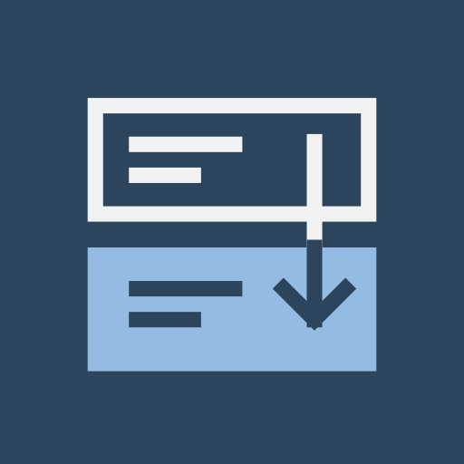
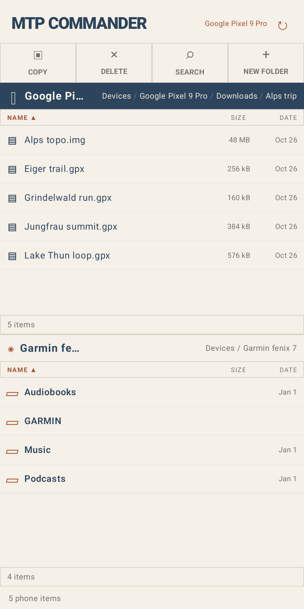
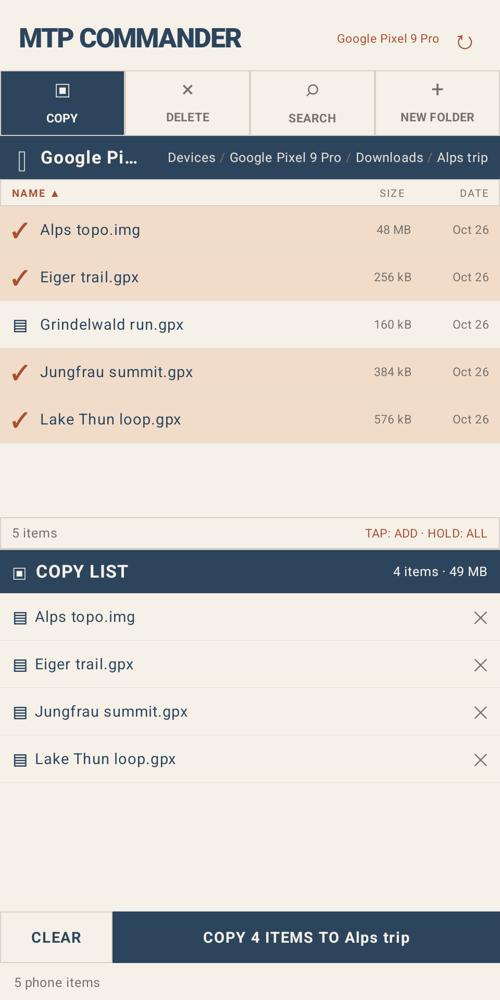
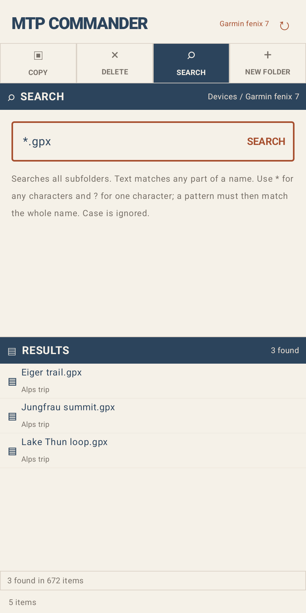
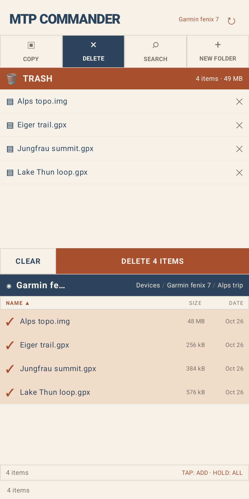

MTP Commander
A two-pane file manager for the devices you plug into your Android phone.
Copy maps, courses, workouts, music and photos between your phone, Garmin watches, cameras, USB drives and your own Google Drive. Tick files, check the total, and press one button. Nothing is copied or deleted before that.




Getting started
- Plug the device into your phone's USB port, directly or with a USB-C/OTG adapter, and open MTP Commander.
- The list starts on Devices. Tap the phone, a device or Google Drive to open it.
- The buttons at the top act on the folder open in the list.
Opening devices
- Garmin watches and other MTP devices ask for USB access the first time. Watches show up by their model name.
- USB drives and cameras in mass storage mode appear as USB drive · tap to allow access. Tap it, then press Use this folder in Android's folder picker. The app remembers the drive.
- Google Drive asks for access to your Google account. The app only sees files and folders it created itself, so start with .
Copying files
- Open the folder to copy from and press . Every file gets a checkbox, and a second list opens below (on the right in landscape).
- Tick files, or hold a file or folder to tick it. Ticks stay while you move to other folders.
- Open the folder to copy into in the second list.
- Press , which shows how many files are ticked and their total size. Progress shows at the bottom. If a file already exists, the app asks before overwriting it.
Deleting files
Press and tick files the same way. Nothing is deleted until you press . Google Drive files go to Drive's trash, where you can restore them.
Searching
Press to search every subfolder of the list's folder. Plain text
matches any part of a name. * stands for any characters and ? for one, so
*.fit finds all FIT files. Case is ignored. With or
on, tick results to add them.
More
- creates a folder in the list's folder. While copying, tap the second list's header first to create it there.
- Tap the Name, Size or Date column header to sort by it.
- Tap a folder in the path at the top of a list to jump back to it.
Download and source
Signed APKs are attached to each GitHub release. The source code and build instructions are on GitHub.